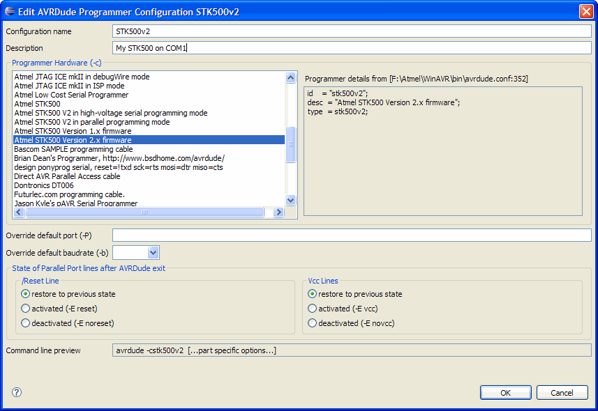

AVRDude Support
This has been the most requested feature of all. Starting with version 2.2 the plugin has direct support for avrdude to upload a project to a target MCU.
AVRDude Preferences
Global avrdude settings are managed via the Eclipse preferences (Window > Preferences...)
The preferences contains:
- Option to show the output of avrdude on the console for internal calls.
The plugin executes avrdude multiple times in the background, for example to get the list of supported MCUs. This can be used for debugging and to see what is going on behind the curtain.
Avrdude output for a project upload is always shown on the console, regardless of this option. - Select a custom configuration file for avrdude.
- Manage the list of Programmers connected to the development system.
Using avrdude with the plugin requires at least one Programmer Configuration. An unlimited number of Programmer Configurations can be defined.

Programmer Configuration Dialog
All settings for a avrdude Programmer are handled in a dialog which has a list of all programmers the currently active avrdude executable supports and some other options like the I/O port the programmer is on.

Project / build config specific avrdude options
Other than the programmer settings, all avrdude options are set on the project properties and can be either global for the project or separate for each build configuration.
The AVRDude properties comprises five tabs to:
- Set the Programmer for the project / build configuration
- Set the flash and eeprom images
- Set the fuse bytes
- Set the Lockbits
- Set some advanced options like disabling the automatic verify check

Upload Project to target MCU with avrdude
There are multiple ways to upload a project to a target MCU.
- Automatic upload after a build. Avrdude can be included in the build toolchain for any build configuration via the project properties.

- Manual upload. There are multiple ways to start the upload manually:
- Via the project context menu (right click on an AVR project).

- With an AVR project selected, the upload can be started with a toolbar button or via the AVR main menu.

- With the Hotkey "Ctrl + Alt + U"*, again with an AVR project selected.
* Hotkey might be different, depending on the Platform. It can be changed with on the Keys preference page (Preferences > General > Keys)
- Via the project context menu (right click on an AVR project).
Other new / improved features
Target Hardware settings for each build configuration
The target hardware setting of a project can now be defined separately for each build configuration.
To enable this set the Enable individual settings for Build Configurations flag on the AVR property page for an AVR project. The default is off, resulting in all AVRDude and target hardware settings to be global to the project and used for all build configurations (like in Plugin version 2.1).

Once the flag is set, a build configuration can be selected on both the AVRDude and the Target Hardware property pages. All property changes will only apply to the selected build configuration. The previous project settings are neither used nor directly accessible, but they are still kept in the project metadata storage and can be copied to the settings for the current build configuration with the Copy Project Settings button.

New "Supported MCUs" View
The plugin has a new view. This view can be opened via Window > Show View > Other... > AVR > AVR Supported MCUs.
This view shows a list of all MCUs known to the plugin and whether or not they
- are supported by the different tools of the active toolchain (avr-gcc and avrdude columns)
- are included in the Atmel Part Description Files (AVR Studio column)
- have fuse and/or lockbit definitions (Fuses column)
The Signature column is just for info because there was still some space left in the table.
Those MCUs for which datasheets are available on the Atmel website are displayed as hyperlinks. Clicking on them will download and open the datasheet.

Views are now workbench selection providers and listeners
The AVR Device Explorer view and the new AVR Supported MCUs view are synchronized and will also show the MCU of the currently selected project.